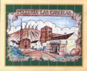
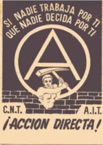

Alcázar de San Juan
 De: La Frikipedia, la enciclopedia extremadamente seria.
De: La Frikipedia, la enciclopedia extremadamente seria.
| De la serie ciudades del mundo:
|
| Moñigolandia
|
| 
|

|
| (Bandera)
|
(Escudo de armas)
|
|
| Topónimo oficial
|
Moñigolandia
|
| País
|
Aspaña
|
| Código postal
|
13600
|
| Superficie
|
un saco
|
| Altitud
|
300 metros mas o menos
|
| Distancia
|
Muy lejos de China
|
| Fundación
|
Alcázar S.A.
|
| Población
|
20 y muchos mil
|
| Gentilicio
|
Moñigón (verídico)
|
| Alcalde
|
Pepe Bodalo
|
Alcázar de San Juan es una ciudad de la comunidad autónoma de Castilla-La Mancha, ubicada en el noreste de la provincia de Ciudad Real.
Gobierno
El jefe de dicho enclave se hace llamar emperador por lo menos. El actual emperador es Julio Fuentes, dueño del bar del mismo nombre, suministrador habitual de alcohol a todo ser que se mueva entre 18 (a mí me pidio el carnet con 17 años y 344 días a sabiendas de mi edad, lo juro) y 133 años.
Recursos económicos
Es el pueblo de las rotondas, cada dos pasos hay una rotonda. Su principal via es La Castelar, cada diez años la levantan. La principal actividad económica del pueblo es la fabricación y consumo de vino y queso. En los últimos años esta cobrando auge la noble labor de destrozar todos los parques bonitos del pueblo y poner una losa gigantesca de cemento en su lugar, obra del anterior emperador Sánchez Bódalo.
Fiestas
Las fiestas más reseñables son La feria, donde se consumen cantidades exorbitantes de vino, wiski, cerveza, pacharán, droguillas varias, bocatas de panceta a media noche...; El baile del vermú en el que te puedes encontrar a tu padre y al capitán de la Guardia Civil agarrados el uno al otro con un pedo mayor del que lleváis todos tus amigos y tú juntos; La fiesta de los sabores que fue una versión mejorada de la anterior porque además se come, de modo que el capitán y tu padre evolucionan a formas de comportamiendo cada vez más parecidas a Jefe Wiggum; San Isidro fiesta celebrada el 15 y 16 de mayo, donde todo el mundo se pone pedo y les da por comprar sombreros y gafas de colores a los negros que pasan por alli vendiendo y Las hogueras donde la gente se reune para hacer hogueras, pero las hogueras son diferentes, todos los niños se involucran en una competicion por saber quien sera capaz de hacer la hoguera mas grande para ir fardando. Algo tipico de las hogueras es ponerse tambien borracho (como no, raro en este pueblo) y enrollarse en lo oscuro con quien sea.
El quijote en Alcázar
Es brutal la gran admiración que despierta en sus habitantes la obra cervantina del Quijote, teniendo un barrio cuyas calles se llaman como los personajes y lugares aparecidos en ese cacho libro. Es más, es raro el habitante que no guarda un parecido enorme con Sancho Panza. Es el lugar de nacimiento de Cervantes (puedo decirlo aquí con un par de cojones y sin argumentos, porque es verdad y a tomar por culo).
Zonas que frecuentar
- El parque alces o de los patos: para fumar porros (en verano)
- El mezz,la bolera,cadillac,braver: zonas frecuentadas por niñatos de 15 años)
- El adepal: para ninños de 11 a 14 años antes se iva a misa aqui pues aora a esto
- Los bancos: zona donde van los machotes a beber alcohol como nombra arriba
- Las chapas:zona donde hacen botellon los jovenes, frecuentado por la gente normal del pueblo al principio de la calle, y conforme te vas adentrando se va llenando de putas, canis bailando regueton y alfinal del to suele estar habitado por rastas.
- El buda o la penelope: Discotecas donde se reune la misma gente que en las chapas en verano. En el buda los niños que no superan la mayoria de edad buscan desesperadamente la forma de entrar consiguiendo un DNI de la amiga de tu prima de su prima para poder entrar. En la penelope, solo van padres y las sobras del buda.
- La sede: zona donde se junta toda la mierda de alcazar para fumar porros. Podemos encontrar varios estilos juntos, rastas, canis, raperos, poqueros...
- El Cartelera: Bar famoso en Alcazar, ya que es el sitio donde van a acabar todos los jovenes. Frecuentado por gente de 25 años para arriba que tienen un curro de mierda o que han sido muy ralencos en su vida, ya que estan alli desde las 10 de la noche bebiendo hasta que amanece.
Frases celebres
- tio me caen mal los skater
- eh que soy de la pradera
- eh que conozco al ñoño
- yo soy rapero(cani con porta en el movil)
- vamonos a robar una bici a criptana
- a que no te sacas el helflip
- me han quedao todas
- biblioteca, ¿que es eso?
- este pueblo esta lleno de rumanos
- tio voy ciego
- cani yo que va
- a mi me defienden los skaters
- llamo a mi primo,cuñao,hermano y te mata
- Vamos a mi garito
- No te oigo! (entonces si no me oyes, ¿por qué sabes que he dicho algo?)
- de canteo
- te paso 3 o 4 porros por diez pavos
- esta mierda abre bien
- Vamos a la sede
- Vamooos locoooooo
- Flaaaanagan !!
Modas
Las ultimas modas son:
- skaters: suelen ser vacilones si no van fumaos
- pijos: provenientes de colegio de curas y monjas
- Bikers: niños con una bicicleta que vale mas que su vida y se creen los reyes del pueblo. Suelen ir en manada a los sitios, dejando rastro con su musica poquera. Conocidos como los bicicletos.
- rastas: suelen ir con los skaters y de echo son el 49,99% de ellos skters
- los moteros: que no les engañe el nombre son niñatos de 17 años con sus super motos que suenan como la labadora mas vieja que puedas encontrar. Suelen ser niños de papa.
- Niñatas: Son las tipicas niñas de 12 a 14 años, que se pintan y arreglan como si tuvieran 20 años. Tambien comen pollas como si tuvieran 20 años.
Autor(es):
- Nexo
- JacintoCanek
- El pitufo cegato
- Meloh
- Aque
- Alex2610
- Khazike Khashondo
- Lunasfingo
- Zatan3000
- ArreKarallo
Frikipedia 2005-2016, Licencia
GFDL 1.2 - Extraído por FrikiLeaks